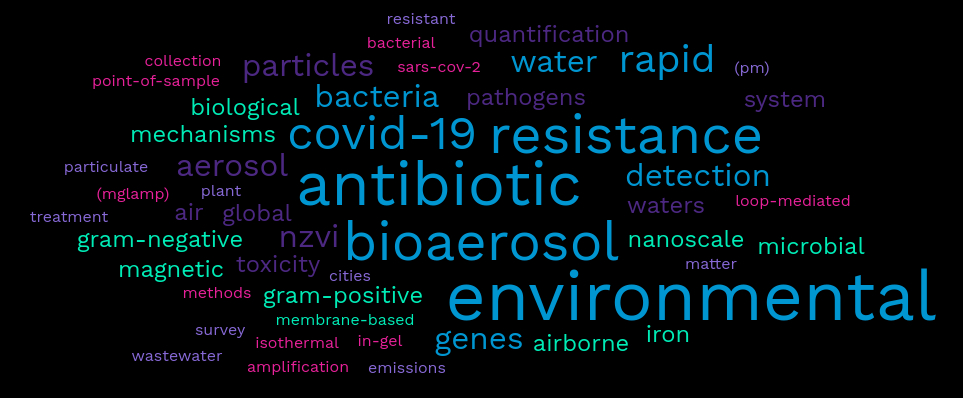

Publications

Google Scholar profile
First/Corresponding author
Yanzhe Zhu, Xunyi Wu, Alan Gu, Leopold Dobelle, Clément A. Cid, Jing Li*, and Michael R. Hoffmann* (2022), Membrane-based in-gel Loop-Mediated Isothermal Amplification (mgLAMP) System for SARS-CoV-2 Quantification in Environmental Waters, Environmental Science & Technology: 56, 2, 862–873. (Selected as the Non-PCR winner in Rapid Wastewater SARS-CoV-2 Testing Challenge held by Water Environmental Foundation) Link
Jing Li, Yanzhe Zhu, Xunyi Wu, Michael R Hoffmann* (2020), Rapid detection methods for bacterial pathogens in ambient waters at the point of sample collection: A brief review, Infectious Diseases, 71 (Supplement_2): S84-S90.Link
Jing Li, Haoxuan Chen, Xinyue Li, Minfei Wang, Xiangyu Zhang, Junji Cao*, Fangxia Shen, Yan Wu, Siyu Xu, Hanqing Fan, Guillaume Da, Rujin Huang, Jing Wang, Chak K. Chan, Alma Lorelei de Jesus, Lidia Morawska, Maosheng Yao* (2019), Differing toxicity of ambient particulate matter (PM) in global cities, Atmospheric Environment, 212, 305-315.Link
Jing Li, Junji Cao, Yongguan Zhu, Qinglin Chen, Fangxia Shen, Yan Wu, Siyu Xu, Hanqing Fan, Guillaume Da, Rujin Huang, Jing Wang, Alma Lorelei de Jesus, Lidia Morawska, Chak K. Chan, Jordan Peccia, Maosheng Yao* (2018), Global survey of antibiotic resistance genes in air, Environmental Science and Technology, 52: 10975-10984. (Selected as the ES&T Cover, ES&T’s Best Papers of 2018 and ACS Editors’ Choice, Recommended in Faculty Opinions, Featured by ACS as an “Embargoed Press Release”, AAAS EurekAlert!, China Daily, Yahoo! News, etc.)Link
Jing Li, Maosheng Yao* (2018), State-of-the-art status on airborne antibiotic resistant bacteria and antibiotic resistance genes (in Chinese), Chinese Journal of Preventive Medicine, 52 (4): 440-445.Link
Jing Li, Liantong Zhou, Xiangyu Zhang, Caijia Xu, Liming Dong*, Maosheng Yao* (2016), Bioaerosol emissions and detection of airborne antibiotic resistance genes from a wastewater treatment plant, Atmospheric Environment, 124, 404-412.Link
Jing Li, Qi Chen, Xinyue Li, Maosheng Yao* (2014), Rapid point-of-use water purification using nanoscale zero valent iron (nZVI) particles, Chinese Science Bulletin, 59 (29/30): 3926-3934.Link
Jing Li, Mingzhen Li, Fangxia Shen, Zhuanglei Zou, Maosheng Yao*, Chang-Yu Wu (2013), Characterization of biological aerosol exposure risks from automobile air conditioning system, Environmental Science and Technology, 47: 10660-10666. Link
Co-author
Alan Y. Gu, Yanzhe Zhu, Jing Li, Michael R. Hoffmann* (2021), Speech-generated aerosol settling times and viral viability can improve COVID-19 transmission prediction, Environmental Science: Atmospheres, 2: 34-45.
Haijie Tong*, Fobang Liu, Alexander Filippi, Jake Wilson, Andrea M Arangio, Yun Zhang, Siyao Yue, Steven Lelieveld, Fangxia Shen, Helmi-Marja K Keskinen, Jing Li, Haoxuan Chen, Ting Zhang, Thorsten Hoffmann, Pingqing Fu, William H Brune, Tuukka Petäjä, Markku Kulmala, Maosheng Yao, Thomas Berkemeier, Manabu Shiraiwa, Ulrich Pöschl (2021), Aqueous-phase reactive species formed by fine particulate matter from remote forests and polluted urban air, Atmospheric Chemistry and Physics, 21: 10439–10455.
Yanzhe Zhu, Jing Li, Xingyu Lin, Xiao Huang, Michael R. Hoffmann* (2021). A hydrogel beads based platform for single-cell phenotypic analysis and digital molecular detection, ACS Applied Bio Materials, 4 (3): 2664-2674.
Siwen Wang, Yanzhe Zhu, Yang Yang, Jing Li, Michael R. Hoffmann* (2020), Electrochemical cell lysis of gram-positive and gram-negative bacteria: DNA extraction from environmental water samples, Electrochimica Acta, 135864.
Xunyi Wu, Xiao Huang, Yanzhe Zhu, Jing Li, Michael R. Hoffmann* (2020), Synthesis and Application of Superabsorbent Polymer Microspheres for Rapid Concentration and Quantification of Microbial Pathogens in Ambient Water, Separation and Purification Technology, 116540.
Haoxuan Chen, Xiangyu Zhang, Ting Zhang, Xinyue Li, Jing Li, Yang Yue, Minfei Wang, Yunhao Zheng, Hanqing Fan, Jing Wang, and Maosheng Yao* (2020), Ambient PM Toxicity Is Correlated with Expression Levels of Specific MicroRNAs, Environmental Science & Technology, 54 (16): 10227-10236.
Haoxuan Chen, Jing Li, Xiangyu Zhang, Xinyue Li, Maosheng Yao*, Gengfeng Zheng* (2018), Automated in vivo nano-sensing of breath-borne protein biomarkers, Nano Letters, 18: 4716-4726.
Yunhao Zheng, Jing Li, Haoxuan Chen, Ting Zhang, Xinyue Li, Minfei Wang, Maosheng Yao* (2018), Bioaerosol research: Yesterday, today and tomorrow (in Chinese), Chinese Science Bulletin, 63: 878-894.
Yang Yue, Haoxuan Chen, Ari Setyan, Miriam Elser, Maria Dietrich, Jing Li, Ting Zhang, Xiangyu Zhang, Yunhao Zheng, Jing Wang*, Maosheng Yao* (2018), Size-resolved endotoxin and oxidizing potential of ambient particles in Beijing and Switzerland, Environmental Science and Technology, 52 (12): 6816-6824.
Kai Wei, Zhuanglei Zou, Yunhao Zheng, Jing Li, Fangxia Shen, Changyu Wu, Yan Wu, Min Hu, Maosheng Yao* (2016), Ambient bioaerosol particle dynamics observed during haze and sunny days in Beijing,Science of the Total Environment, 15 (550): 751-759.
Kai Wei#, Yunhao Zheng#, Jing Li#, Fangxia Shen, Zhuanglei Zou, Hanqing Fan, Xinyue Li, Chang-yu Wu, Maosheng Yao* (2015), Microbial aerosol characteristics in highly polluted and near pristine environments featuring different climatic conditions, Science Bulletin, 60 (16):1439-1447. (#Authors contribute equally)
Pengpeng Huang, Zhengfang Ye, Wuming Xie, Qi Chen, Jing Li, Zhencheng Xu, Maosheng Yao* (2013), Rapid magnetic removal of aqueous heavy metals and their relevant mechanisms using nanoscale zero valent iron (nZVI) particles, Water Research, 47: 4050-4058.
Qi Chen#, Jing Li#, Yan Wu, Fangxia Shen, Maosheng Yao* (2013), Biological responses of Gram-positive and Gram-negative bacteria to nZVI (Fe0), Fe2+ and Fe3+, RSC Advances, 3: 13835-13842. (#Authors contribute equally)
Qi Chen, Min Gao, Jing Li, Fangxia Shen, Yan Wu, Zhenqiang Xu, Maosheng Yao* (2012), Inactivation and magnetic separation of bacteria from liquid suspensions using electrosprayed and nonelectrosprayed nZVI particles: Observations and mechanisms, Environmental Science and Technology, 46 (4): 2360-2367.
Patents
Membrane-Based in-Gel Loop-Mediated Isothermal Amplification (mgLAMP) System Enables Rapid Quantification of SARS-CoV-2 in Large-Volume Environmental Waters (2021). Michael R. Hoffmann, Jing Li, Yanzhe Zhu, Xunyi Wu, Alan Gu, Léopold Dobelle, Clément A. Cid. US Patent Number US20220162686A1. International Patent Number WO2022115187A1.Link